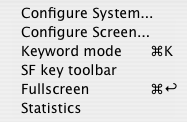

WangEmu Keyboard Map
The Wang 2200 had a number of different keyboard options during its life. The earliest ones are best described as being more like a calculator keyboard that had the letters retrofitted to it than a keyboard meant for typing. Later ones did have a more or less normal typewriter layout augmented with some dedicated keys for performing common tasks.
One problem most emulators have is deciding how to map the emulated keys onto the keys available on the host computer's keyboard. Many emulator writers attempt to map the emulated keys to the same positions of the keyboard even if the key legend is very different (such that a blindfolded user of the emulated computer would feel at home). WangEmu takes the other tack. As much as possible, if a key with the right legend is available on the host keyboard, that is the one used to represent the equivalent 2200 key.
That still leaves some problems. The Mac keyboard has many keys that the 2200 (more correctly, the 2226 keyboard) didn't have, and the 2226 had some keys that the Mac keyboard doesn't have. In these cases, WangEmu tries to pick keys that are somewhat mnemonic. Also, not all keys were directly mapped since such a mapping was rarely used and adding it to the emulator would cause more confusion than it was worth (e.g., mapping "RENUMBER" to the shifted comma key, while accuate, would have necessitated moving the "<" symbol to some other obscure location).
Another matter is that there isn't complete standardization on keyboard layouts. This is especially true on the Mac platform. Perhaps a future version of the emulator will allow for a user-configurable key map, but for now, changing it requires editing the source code and recompiling.
Special function keys and dedicated keyword keys
Unfortunately, the Wang has 16 special function keys, while not all Mac keyboards do. OS X also steals some keys for various Exposé functions; holding down the FN-key while pressing the indicated function key will allow the emulator to see the function key press without the side effects.
There are two other methods for getting function key presses to the emulator. First, WangEmu can be configured to display a toolbar with all the special function keys.
Second, special function keys used in the EDIT mode are also mapped to control key combinations. For example, to enter the SF 13 key, which in edit mode causes the cursor to move left one position, it is much more mnemonic to press LEFT-ARROW (←).
Below is a complete table of the mappings. In some cases, there are two Mac keys or key combinations that are used to emulate a given keystroke. On the 2200, some of the special function keys get a dedicated purpose when in edit mode, shown as the last column of the table.
| Wang key | 2200 use | 2200 use in edit mode | Mac keys |
| †This edit behavior is for (M)VP OS only | |||
| ‡This behavior is for 2200A/B/C/S/T Wang BASIC | |||
| §This behavior is for 2236 serial terminals w/(M)VP | |||
| SF0 | special function 0 | n/a | ESC |
| SF1 | special function 1 | n/a | F1 |
| SF2 | special function 2 | n/a | F2 |
| SF3 | special function 3 | n/a | F3 |
| SF4 | special function 4 | †cursor to end of line | F4 Shift-↓ |
| SF5 | special function 5 | †cursor down a line | F5 ↓ |
| SF6 | special function 6 | †cursor up a line | F6 ↑ |
| SF7 | special function 7 | †cursor to start of line | F7 Shift-↑ |
| SF8 | special function 8 | delete to end of line | F8 End Ctrl-K(ill) |
| SF9 | special function 9 | delete char under cursor | F9 Delete Ctrl-D |
| SF10 | special function 10 | insert char at cursor | F10 Ctrl-I |
| SF11 | special function 11 | cursor right 5 places | F11 Shift + → |
| SF12 | special function 12 | cursor right 1 place | F12 → |
| SF13 | special function 13 | cursor left 1 place | F13 ← |
| SF14 | special function 14 | cursor left 5 places | F14 Shift + ← |
| SF15 | special function 15 | recall line | F15 Ctrl-F |
| EDIT | enter edit mode | n/a | F16 Ctrl-E |
| LINE ERASE | clear whole line | clear whole line | Home |
| ‡STMT NUMBER | next line number | Tab | |
| §FN | function key | Tab | |
| HALT/STEP | break/single step | n/a | Ctrl-S |
Pressing the key or key sequence for SF0-SF15 in combination with the SHIFT key will generate the codes for the 2200's special function 16 through 31 keys (the 2226 also had only 16 special function keys, SF0-SF15, and SF16-SF31 were obtained by pressing SHIFT to add 16 to the special function key number).
To recall and edit, say, line 500, either of the following sequences can be used:
500<F16><F15>
500<press ctrl><E><F><release ctrl>
Keyword Keys
The 2226 keyboard had two modes of operation: "Keyword/A" and "A/a". Which mode the keyboard was in was controlled by a toggle switch on the left side of the keyboard. This is controlled in the emulator in any of three ways: the checkbox in the lower left corner of the emulated CRT window, via the Configure/Keyword mode menu item, or with the Cmd-K shortcut.
|  |
In "A/a" mode, the keyboard works pretty much like a typewriter, with unshifted keys producing lower case letters and shifted keys producing capital letters. In "Keyword/A" mode, unshifted keys produced capital letters while shifted keys produced BASIC keywords. Most of them have been preserved.
| Mac key | Keyword | Mac key | Keyword |
| A | HEX( | N | TRACE |
| B | SKIP | O | STEP |
| C | REWIND | P | NEXT |
| D | DATA | Q | COM |
| E | DEFFN | R | GOSUB |
| F | RESTORE | S | STR( |
| G | READ | T | RETURN |
| H | IF | U | INPUT |
| I | FOR | V | SAVE |
| J | THEN | W | DIM |
| K | STOP | X | BACKSPACE |
| L | END | Y | REM |
| M | GOTO | Z | SELECT |
In 2236 mode (serial terminal), the Wang keyboard did not have a keyword mode. Instead, the same switch just toggled between normal mode and caps-lock mode.
 |
For both 2226 (dumb terminal) and 2236 (serial terminal) modes of operation, a few keys couldn't be conveniently mapped to their Wang-like positions and have been mapped to control keys. Each (except CONTINUE) uses the first letter of the word it maps as a convenient mnemonic.
| Mac key | Keyword |
| Ctrl-C | CLEAR |
| Ctrl-L | LOAD |
| Ctrl-P | |
| Ctrl-R | RUN |
| Ctrl-Z | CONTINUE |
A number of other keyboard shortcuts have been added to map keys that don't appear on a Mac keyboard, or which are convenient 2nd choices vs using the special function key toolbar. The control key names try to use a mnemonic letter, except for Ctrl-F (SF15/recall). This was chosen because the [edit][recall] sequence is a frequent pair, and so Ctrl-[E][F] is a quick action.
The odd man out is the RESET key, which was mapped to Shift-Cmd-R to make it difficult to accidentally trigger.
| Mac key | key |
| Ctrl-E | edit mode toggle |
| Ctrl-F | edit mode recall |
| Ctrl-D | edit mode delete |
| Ctrl-I | edit mode insert |
| Ctrl-K | edit mode kill to end of line |
| Ctrl-S | halt/step |
| END | ERASE key |
| Tab | STMT NUMBER key (2226) |
| Tab | FN key (2236) |
| Shift-Cmd-R | RESET |
There are a few keyboard shortcuts that don't map to a real keyboard behavior; rather, these are used to manage the emulation, not the emulated computer.
| Mac key | Function |
| Cmd-G | screen grab |
| Cmd-X | exit application |
| Cmd-K | toggle keyword mode |
| Cmd-Enter | toggle full-screen mode |
Finally, here is a diagram showing where all the keys are mapped, at least on my keyboard. Certain keys may appear in different locations on different keyboards, especially European keyboards.